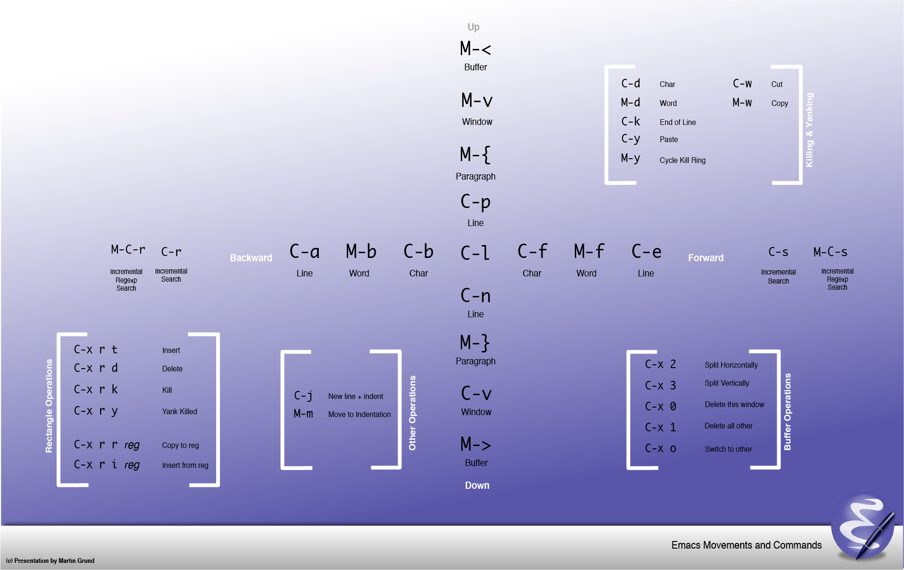

리스프를 배우기 위해서, 어색하고 손가락이 아픈 Emacs를 굳이 고집할 필요는 없습니다.
Emacs에 비해 한참 어리지만 모던한, VSCode나 IntelliJ, Visual Studio와 같은 다른 에디터/IDE를 사용해도 됩니다.
그래도 기왕 여기까지 온 김에 한번 살펴보는 것도 좋을 것 같습니다.
Emacs는 리스프를 내장한 에디터이므로, 리스프를 배우면서 자신이 쓰는 에디터 역시 내 입맛에 맞게 고칠 수 있습니다.
광기어린듯한 하지만 엄청난 프로그래밍 실력으로 GNU이맥스를 작성한 리처드 스톨먼 아저씨.
저 아저씨가 어떤 생각으로 Emacs를 만들었는지 알고 싶다면 이 글 을 읽어보세요.
GNU(GNU's Not Unix) 이 말장난 같은 GNU에 대해서도 알아보세요 .
지금은 사그라들었지만, 한때 종교전쟁이라 불릴만한 에디터 Emacs vs Vim 대결 역사 도 한번 들여다 볼만합니다.
다음 라이브 코딩 영상을 감상해보시면서 Emacs의 매력에 빠져보세요.
아래 영상에서 박성민님은 Emacs를 이용하여 Common Lisp를 다루고 있습니다.
VIDEO
emacs 컴파일 옵션이 여러가지가 있으며, 아래 명령어를 통해 확인할 수 있습니다.
# ref: https://emacs.stackexchange.com/a/35512
# 설치된 emacs의 컴파일 옵션 확인
emacs --no-window-system --no-init-file --batch --eval "(message system-configuration-options)"
# scoop 설치
Set-ExecutionPolicy -ExecutionPolicy RemoteSigned -Scope CurrentUser
Invoke-RestMethod -Uri https://get.scoop.sh | Invoke-Expression
## git과 emacs 설치
scoop bucket add extras
scoop install emacs
scoop bucket add main
scoop install git
# 윈도우10에서는 BSD Tar가 설치되어 있음. 하지만 필요한건 GNU Tar
scoop bucket add main
scoop install tar
# 기타 유틸들
scoop bucket add main
scoop install ripgrep
scoop install direnv
scoop install fzf
scoop install global
scoop install openssh
scoop install gow
scoop install fd
scoop install gpg
기타
간혹 운영체제 호환성 문제로 인해 윈도우에서 WSL을 이용하여 우분투를 사용하는 경우가 있습니다.
sudo apt update
# 기본적으로 git은 설치하자
sudo apt-get install -y git
sudo apt install -y snapd
sudo snap install -y emacs --classic
# 삭제시
# sudo snap remove
모드 설명
--classic classic confinement for full system access --dangerous dangerous mode for testing local unsigned snaps --devmode developer mode for testing and viewing log output --jailmode forces a snap to be installed with strict confinement
채널 설명
--beta for users wanting to test the latest features, typically outside of a production environment. --edge for users wanting to closely track development.
# /etc/default/locale
# /etc/environment
# /etc/profile
# 언어팩 설치
sudo apt-get install -y language-pack-ko
sudo apt-get install -y language-pack-ko-base
sudo apt-get install -y localepurge
sudo echo "ko_KR.EUC-KR EUC-KR" >> /var/lib/locales/supported.d/ko
sudo locale-gen --purge
sudo dpkg-reconfigure locales
sudo echo 'LANG="ko_KR.UTF-8"' >> /etc/environment
sudo echo 'LANG="ko_KR.UTF-8"' >> /etc/profile
# 고정폭 폰트 설치
sudo apt-get install -y fonts-naver-d2coding
/usr/share/fonts/ fonts for all users ~/.local/share/fonts/ fonts for particular user
# fc-cache : 폰트 빌드
fc-cache --force --verbose
# fc-list : 폰트 목록 확인
fc-list
# fc-query : 폰트 정보 확인
# download: https://raw.githubusercontent.com/kelvinks/D2Coding_Nerd/master/D2Coding%20v.1.3.2%20Nerd%20Font%20Complete.ttf
fc-query ./D2Coding%20v.1.3.2%20Nerd%20Font%20Complete.ttf | grep family
# homebrew 설치
/bin/bash -c "$(curl -fsSL https://raw.githubusercontent.com/Homebrew/install/HEAD/install.sh)"
# git 설치
brew install git
# gnu-tar 설치
brew install gnu-tar
# font 설치
brew tap homebrew/cask-fonts
brew install font-d2coding-nerd-font
# 기타 유틸들
brew install ripgrep
# emacs 설치
brew install --cask emacs
# emacs 설치
brew tap d12frosted/emacs-plus
# for Just-In-Time Compilation
# ref: https://gcc.gnu.org/wiki/JIT
brew install libgccjit
export CC=gcc
brew install emacs-plus@29 --with-native-comp
# Emacs.app was installed to:
# /opt/homebrew/opt/emacs-plus@29
#
# To link the application to default Homebrew App location:
# ln -s /opt/homebrew/opt/emacs-plus@29/Emacs.app /Applications
#
# Your PATH value was injected into Emacs.app/Contents/Info.plist
#
# Report any issues to http://github.com/d12frosted/homebrew-emacs-plus
#
# To start d12frosted/emacs-plus/emacs-plus@29 now and restart at login:
# brew services start d12frosted/emacs-plus/emacs-plus@29
# Or, if you don't want/need a background service you can just run:
# /opt/homebrew/opt/emacs-plus@29/bin/emacs --fg-daemon
ln -s /opt/homebrew/opt/emacs-plus@29/Emacs.app /Applications
Control-Command-Q : 화면 잠금 단축키가 할당되어 있다.lisp-mode에선 C-M-q가 indent-pp-sexp로 할당되어 있다.
indent-pp-sexp: 괄호로 묶여 있는 모든 줄을 재정렬한다.
자주 쓰는 기능인데 단축키가 겹쳐 화면 잠금 단축키를 덮어 씌우는 편이 좋다.
> 하단에보면 > 화면 잠금이 있는데 이걸 다른키로 맵핑 시킬 것이다. > 시스템 설정 > 키보드 > 키보드 단축키... > 앱 단축키 > 모든 응용 프로그램 > +
메뉴 제목에 화면 잠금을 입력한다. ( 눌러서 이름/띄어쓰기가 동일한지 확인)원하는 단축키를 입력한다.
버전 날짜 주목할만 변경사항
30.1 - 추가: use-package - :vc 키워드 지원 29.1 2023-07-30 추가: Tree-sitter 추가: EGlot 추가: use-package 추가: package-vc-install 추가: restart-emacs 옵션: --init-directory 삭제: linum-mode (elisp로 작성된거라 느림) 28.1 2022-04-04 추가: use-short-answers 27.1 2020-08-10 기본 활성화: 렉시컬 바인딩 이름변경: cl => cl-lib 추가: early-init.el 추가: bidi-inhibit-bpa 추가: fido-mode 26.1 2018-05-28 추가: display-line-numbers-mode / (속도향상위해 c언어로 작성됨) 추가: read-answer-short 24.5 2015-04-10 24.4 2014-10-20 삭제: iswitchb-mode 추가: prettify-symbols-mode 추가: icomplete-mode 24.1 2012-06-10 추가: package.el 추가: electric-pair-mode 추가: prog-mode 22.1 2007-06-02 추가: ibuffer 추가: ido 추가: iswitchb-mode 21.1 2001-10-28 추가: global-hl-line-mode
Ctrl-G
키 기호
Ctrl C- Meta M- Super S- Hyper H- Enter RET Space SPC F1 상하좌우 /// 마우스
필수 단축키
중단 C-g파일 열기 C-x C-f 저장하기 C-x C-s 저장하기(다른이름) C-x C-w 종료 C-x C-c 명령어 실행 M-x 명령어
C-이동 단축키 M-이동 단축키
문자 앞(forward) C-f 단어 앞(forward) M-f 문자 뒤(back) C-b 단어 뒤(back) M-b 라인 위(previous-line) C-p 라인 아래(next-line) C-n 라인 앞 C-a 문단 앞 M-a 라인 뒤 C-e 문단 뒤 M-e 라인으로 이동 M-g M-g 라인

위에 필수과 이동을 잘 숙지 후, M-x help-with-tutorial-spec-language후 Korean을 입력하시면 한글로 튜토리얼을 볼 수 있습니다.
이동 단축키 이동 단축키
C-k 현재 커서에서 라인 끝까지 삭제 M-k 버퍼 삭제 이전 문자 지우기 <Del>이전 단어 지우기 M-<Del> 다음 문자 지우기 C-d 다음 단어 지우기 M-d
복사, 붙여넣기, 되돌리기 단축키
마크: 설정 C-<SPC> 마크: 전체 C-x h 마크: 복사 M-w 마크: 잘라내기 C-w 붙여넣기C-y 되돌리기C-x u 되돌리기C-/
확대축소 단축키
확대 C-x C-- 축소 C-x C-= 자동줄바꿈(껏다 켰다) C-x x t toggle-truncate-lines
검색 단축키
정방향 C-s 역방향 C-r 정방향(정규표현식) C-M-s 역방향(정규표현식) C-M-r 바꾸기 M-% 바꾸기(정규표현식) C-M-%
설명 단축키 함수
정보보기 C-h i info 키 확인(간단히) C-h c describe-key-briefly 키 확인(자세히) C-h k describe-key 최근에 입력한 키 보기 C-h l 혹은 l 단축키 보기(모두) C-h b 단축키 보기(C-x로 시작하는 것만) C-x C-h 혹은 C-x 단축키 보기(사용자 정의) C-c C-h 혹은 C-c
https://unix.stackexchange.com/a/180129
M-x shell
{grep, du, ls, sort, cat, head, tail, uname, ...}와 같은 클래식/표준 Unix 쉘 명령의 일반적인 사용에 적합합니다.
M-x term ＆ M-x ansi-term
ssh나 기타 명령줄 대화형 인터페이스(예: {python, ruby, lisp} 셸) 또는 {vim, synaptic, …}과 같은 텍스트 기반 GUI 앱을 실행하려는 경우에 좋습니다.
M-x eshell
eshell은 emacs lisp에 직접 액세스할 수 있기 때문에 bash가 설치되지 않은 Microsoft Windows에서 특히 좋습니다. 또는 emacs lisp 프로그래머라면 더욱 좋습니다.
버퍼 와 윈도우 를 자주 사용합니다.
버퍼 단축키
목록 C-x C-b 이동 C-x b 삭제 C-x k 읽기전용(토클) C-x C-q
윈도우 프레임 탭
현재창 닫기 C-x 0 C-x 5 0 C-x t 0 다른창 닫기 C-x 1 C-x 5 1 C-x t 1 새로만들기 C-x 2 C-x 5 2 C-x t 2 새로만들기(우측) C-x 3 다음으로 이동 C-x o C-x 5 o C-x t o 파일 열기 C-x C-f C-x 5 C-f C-x t C-f 파일 열기(읽기전용) C-x C-r C-x 5 r C-x t C-r
주(매이져, Major)모드와 보조(마이너, Minor)모드가 있습니다.
M-x describe-mode RET 으로 확인 할 수 있습니다.
모드를 키고 끄는건 +1 혹은 -1을 사용하도록 합니다.
(display-time-mode +1) ; 시간 켜기
(display-time-mode -1) ; 시간 끄기 (0포함 음수면 끄기)
elisp파일을 열고 M-x prettify-symbols-mode RET으로 한 다음,
M-x describe-mode RET를 입력하면 매이저/마이너 모드를 확인 할 수 있습니다.
매이저 ELisp/d는 elisp-mode.el 정의되어있고,
마이너 모드는 Auto-Save, Eldoc, Font-Lock, 그리고 아까 활성화시킨 Prettify-Symbols 가 활성되어있습니다.
;; emacs-lisp-mode는 lisp-data-mode를
;; lisp-data-mode는 prog-mode(programming mode)를
;; prog-mode는 fundamental-mode를 상속받고 있습니다.
;; emacs-lisp-mode
;; -|> lisp-data-mode
;; -|> prog-mode
;; -|> fundamental-mode
;; 그리고 lisp-data-mode는 다음 prettify-symbols-alist를 가지고 있다.
;; alist란 association list(연관리스트)의 약자로, (key . value)의 리스트이다.
(defconst lisp-prettify-symbols-alist '(("lambda" . ?λ))
"Alist of symbol/\"pretty\" characters to be displayed.")
;; prettify-symbols-mode를 활성시켰으므로
;; emacs-lisp-mode인 .el파일에서 lambda를 입력하면 λ로 바뀐다.
C-x f hello.el로 초기화 파일을 열어봅시다.
defun 함수 정의 interactive 함수를 M-x로 실행할 수 있게 함
;; init.el --- Emacs configuration
;; `C-M-x` 평가하기
;; 다음 함수를 작성하여 함수를 평가하여 정의합니다.
(defun hello ()
(message "Hello World"))
;; 다음 폼(form)을 평가하면 하단에 "Hello World"가 출력됩니다.
(hello)
;; (interactive)를 추가하면, `M-x hello`로 함수를 실행할 수 있습니다.
(defun hello ()
(interactive)
(message "Hello World"))
---
title: Major 모드 조감도
---
classDiagram
fundamental-mode <|-- comint-mode
comint-mode <|-- inferior-emacs-lisp-mode
note for inferior-emacs-lisp-mode "버퍼: *ielm*"
fundamental-mode <|-- prog-mode
prog-mode <|-- lisp-data-mode
lisp-data-mode <|-- lisp-mode
lisp-data-mode <|-- emacs-lisp-mode
emacs-lisp-mode<| -- lisp-interaction-mode
note for lisp-interaction-mode "버퍼: *scratch*"
prog-mode <|-- clojure-ts-mode
prog-mode <|-- racket-mode
IELM(Interactive Emacs Lisp Mode)
M-x ielm RET
기능 단축키 함수
코드 평가 M-: eval-expression 모드확인 describe-mode 변수설명 describe-variable 함수설명 describe-function
.el 파일에서 단축키 함수
form 평가 C-M-x eval-defun 괄호로 묶여 있는 모든 줄을 재정렬 C-M-q indent-pp-sexp
확장자 설명
.el 텍스트 .elc 컴파일(바이트) .eln 컴파일(네이티브)
;; association list
;; push를 사용하게 되면 같은 키가 여러개 생긴다.
(defvar x-alist '((a . 1))) ; ((a . 1))
(push '(a . 1) x-alist) ; ((a . 1) (a . 1))
;; add-to-list를 사용하면 같은 키가 여러개 생기지 않는다.
(defvar x-alist '((a . 1))) ; ((a . 1))
(add-to-list 'x-alist '(a . 1)) ; ((a . 1))
(add-to-list 'x-alist '(a . 2)) ; ((a . 1) (a . 2)) ;; 의도하지 않은 결과가 나온다.
;; ref: https://stackoverflow.com/a/25100962
;; property list
(defvar x-plist '(:a 1 :b 2)) ; (:a 1 :b 2)
(plist-get x-plist :b) ; 2
;; 사전
;; ref: https://www.gnu.org/software/emacs/manual/html_node/elisp/Dictionaries.html
;; memq
> (memq 9 '(1 2 3))
nil
> (memq 2 '(1 2 3))
(2 3)
이곳 에서 미리 설정한 .emacs.d/ 템플릿을 받을 수 있습니다.
Emacs가 시작될 때, 초기화 파일을 로드합니다.
파일명
~/.emacs.el 안쓰는게 좋음. ~/.emacs 안쓰는게 좋음. ~/.emacs.d/init.el Windows, macOs에 추천 ~/.config/emacs/init.el Linux에 추천
변수 user-emacs-directory는 초기화 파일이 있는 폴더 명시합니다.
Emacs는 다음과 같은 시작 옵션을 제공합니다.
emacs 옵션 설명
--no-init-file / -q 기본 초기화 파일을 로드하지 않음 --debug-init 초기화 파일에 디버거를 활성화 시킴 --load 파일위치 / -l 파일위치 특정 파일을 로드함 --no-window-system / -nw GUI를 사용하지 않음 --init-directory=폴더 init 폴더를 지정한 곳으로 설정가능
# init폴더 영향 없이 다른 위치에 있는 elisp만 로드
emacs --no-init-file --load ~/other/init.el
# 다른 위치에 있는 init 폴더로 초기화 하며 이맥스를 켜고 싶다면.
# --init-directory 옵션은 29.1 버전부터 지원
emacs --init-directory=~/other_init_dir
.emacs.d/init.el을 시작위치로, .emacs.d/ 폴더를 github등을 이용해 버전관리해주면 좋습니다..org파일로 .el를 생성할 수 있는 점을 이용. 문서화와 코드를 동시에 관리하는 방법도 있습니다.
다만, 설정파일을 org로 다루는 것은 호불호가 갈리고, 무엇보다도 org를 다루기에는 너무나 방대합니다.
따라서, 여기서 Org는 다루지 않겠습니다 .
설명하기 편하게 시작폴더를 ~/.emacs.d/로 가정하겠습니다.
~/.emacs.d/.gitignore를 만들어 줍니다.
*~ : 백업파일
\#*\# :
/.emacs.desktop :
/.emacs.desktop.lock :
*.elc : 컴파일(바이트) 파일
auto-save-list : 자동저장 파일
tramp : tramp 관련
.\#* : 락파일
# Org-mode : org-mode 관련
.org-id-locations
*_archive
# flymake-mode : flymake 관련
*_flymake.*
# eshell files : eshell 관련
/eshell/history
/eshell/lastdir
# elpa packages : 패키지관련
/elpa/
# reftex files : reftex 관련
*.rel
# AUCTeX auto folder : AUCTeX 관련
/auto/
# cask packages : cask 관련
.cask/
dist/
# Flycheck : flycheck 관련
flycheck_*.el
# server auth directory : emacsclient
/server/
# projectiles files : projectile 관련
.projectile
# directory configuration : dir-locals
.dir-locals.el
# network security : network-security 관련
/network-security.data
# 컴파일(네이티브) 파일
/eln-cache/
# 캐쉬
/\.cache/
# 프로젝타일 관련
/projectile-bookmarks.eld
/projectile.cache
# 커스텀파일
/custom.el
~/.emacs.d/init.el에는 다음과 같은 일을 할 것입니다.
초기 파일/폴더 관련 설정
package.el와 use-package를 이용해 패키지를 받을 저장소를 지정합니다.init-loader를 이용해 초기화 파일을 관리합니다.
elisp 설명
custom-file 설정파일 경로 user-emacs-directory 초기화 파일이 있는 폴더 locate-user-emacs-file user-emacs-directory기준 새로운 경로 반환load 파일을 로드합니다. make-backup-files 백업파일을 만듭니다. create-lockfiles lock파일을 만듭니다.
~.emacs.d/custom.el과 같이 하드코딩하는 것은 좋지 않습니다(--init-directory 옵션을 사용할 경우를 대비).locate-user-emacs-file 함수를 이용하면 user-emacs-directory기준으로 경로를 반환합니다.
(progn ;; `initial-file&directory'
;; ref: https://www.gnu.org/software/emacs/manual/html_node/emacs/Saving-Customizations.html
(setq custom-file (locate-user-emacs-file "custom.el"))
(load custom-file 'noerror)
;; lock 파일 .#파일명
;; ref: https://www.gnu.org/software/emacs/manual/html_node/emacs/Backup.html
(setq make-backup-files nil)
;; backup 파일 파일명~
;; ref: https://www.gnu.org/software/emacs/manual/html_node/elisp/File-Locks.html
(setq create-lockfiles nil)
;; ref: https://www.gnu.org/software/emacs/manual/html_node/emacs/Auto-Save-Control.html
(setq auto-save-default nil))
Package Manager 참고
package.el: Emacs 24.1(2012-06-10)
use-package: Emacs 29.1(2023-07-30)
Package Archive
elpa(Emacs Lisp Package Archive)
melpa(Milkypostman Emacs Lisp Package Archive)
미러
(use-package package
;;
;; ref: https://github.com/emacs-mirror/emacs/blob/master/lisp/emacs-lisp/package.el
;; ref: https://www.gnu.org/software/emacs/manual/html_node/emacs/Packages.html
;;
;; elpa(`E`macs `L`isp `P`ackage `A`rchive)
;; melpa(`M`ilkypostman `E`macs `L`isp `P`ackage `A`rchive)
;;
;; elpa(gnu): https://elpa.gnu.org/
;; elpa(nognu): https://elpa.nongnu.org/
;; melpa: http://melpa.org/
;; melpa(stable): http://stable.melpa.org/
;; 미러 칸트대학: https://www.mirrorservice.org/
;; 미러 칭화대학: https://mirrors.tuna.tsinghua.edu.cn/help/elpa/
:config
(progn ;; `elpa'
(defconst PACKAGE_ELPA_GNU
'("gnu" . "https://elpa.gnu.org/packages/"))
(defconst PACKAGE_ELPA_NOGNU
'("nongnu" . "https://elpa.nongnu.org/nongnu/")))
(progn ;; `melpa'
(defconst PACKAGE_MELPA
'("melpa" . "http://melpa.org/packages/"))
(defconst PACKAGE_MELPA_STABLE
'("melpa-stable" . "http://stable.melpa.org/packages/")))
(progn ;; `mirrorservice'
(defconst PACKAGE_MIRRORSERVICE_MELPA
'("melpa" . "http://www.mirrorservice.org/sites/melpa.org/packages/"))
(defconst PACKAGE_MIRRORSERVICE_MELPA_STABLE
'("melpa-stable" . "http://www.mirrorservice.org/sites/stable.melpa.org/packages/")))
(progn ;; `tsinghua'
(defconst PACKAGE_TSINGHUA_GNU
'("gnu" . "http://mirrors.tuna.tsinghua.edu.cn/elpa/gnu/"))
(defconst PACKAGE_TSINGHUA_NOGNU
'("nognu" . "http://mirrors.tuna.tsinghua.edu.cn/elpa/nongnu/"))
(defconst PACKAGE_TSINGHUA_MELPA
'("melpa-cn" . "http://mirrors.tuna.tsinghua.edu.cn/elpa/melpa/"))
(defconst PACKAGE_TSINGHUA_MELPA_STABLE
'("melpa-stable-cn" . "http://mirrors.tuna.tsinghua.edu.cn/elpa/stable-melpa/")))
;;(setq-default package-user-dir DIR_ROOT_PACKAGE)
(setq package-archives
(list
PACKAGE_ELPA_GNU
PACKAGE_ELPA_NOGNU
PACKAGE_MELPA
)))
elisp 설명
init-loader-directory 초기화 파일이 있는 폴더
init-loader는 init-loader-directory에 있는 파일들을 순서대로 로드합니다.
여기서는 inits/폴더를 기준으로 로드하도록 하였습니다.
(use-package init-loader
:ensure t
:init
(let* ((my-inits-dir (locate-user-emacs-file "inits")))
(unless (file-exists-p my-inits-dir)
(make-directory my-inits-dir t))
(setq init-loader-directory my-inits-dir)
;; (setq init-loader-byte-compile t)
(init-loader-load)))
init-loader에 의해 로드되는 파일들이 위치하는 폴더입니다.오름차순 즉 낮은 순서부터 먼저 로드됩니다.(01 -> 02 -> 03)
0번대(0 ~ 999) 1000번대 2000번대 프로그래밍 언어 설정
;; file: 0000_define.el
(defconst true t)
(defconst false nil)
(defconst IS_WINDOWS (eq system-type 'windows-nt))
(defconst IS_MAC (eq system-type 'darwin))
(defconst MODE_ON +1)
(defconst MODE_OFF -1)
(defmacro -> (&rest body)
(let ((result (pop body)))
(dolist (form body result)
(setq result
(append (list (car form) result)
(cdr form))))))
(defmacro ->> (&rest body)
(let ((result (pop body)))
(dolist (form body result)
(setq result
(append form (list result))))))
(defmacro comment (&rest body)
nil)
(defmacro do (&rest body)
`(progn
,@body))
예전에는 file-name-coding-system, set-terminal-coding-system, set-keyboard-coding-system 등등 했었은데 이제는 set-default-coding-systems 하나로 끝낸다.
예전에는 (defalias 'yes-or-no-p 'y-or-n-p) 이런식으로 했었다
;; file: 0010_base-setting.el
(progn ;; `설정::한글'
;; ref: https://www.gnu.org/software/emacs/manual/html_node/emacs/Language-Environments.html
(set-language-environment "Korean"))
(progn ;; `설정::utf-8'
;; utf-8 설정
;; ref: https://www.masteringemacs.org/article/working-coding-systems-unicode-emacs
;; ref: https://www.gnu.org/software/emacs/manual/html_node/elisp/Default-Coding-Systems.html
(set-default-coding-systems 'utf-8)
(prefer-coding-system 'utf-8))
(progn ;; `설정::Y_혹은_N으로_대답'
(setq read-answer-short t)
(setq use-short-answers t))
;; 0011_macos.el
(progn ;; `설정::macOs'
;;
;; ns : NeXTSTEP. Darwin이전에 사용되던 OS
;; darwin: Darwin (kernel)로 macOs의 기반이되는 코어.
;; darwin/ns/mac 이라 치면 보통 macOs구나 라고 생각하면 편하다.
;; mac-function-modifier => alias ns-function-modifier
;;
;; ref: https://www.gnu.org/software/emacs/manual/html_node/emacs/Mac-_002f-GNUstep-Customization.html
;;
;; +-----+-------+-----+-----+-------------------+-----+-----+
;; | | | | | | | |
;; |Fn |Ctrl |Optn |Cmd | Space |Cmd |Optn |
;; +-----+-------+-----+-----+-------------------+-----+-----+
;; |hyper|control|super|meta | Space |Cmd |Optn |
;; +-----+-------+-----+-----+-------------------+-----+-----+
;;
(when (eq system-type 'darwin)
;; ref: https://www.gnu.org/software/emacs/manual/html_node/emacs/Mac-_002f-GNUstep-Customization.html
(setq ns-function-modifier 'hyper)
(setq ns-control-modifier 'control)
(setq ns-option-modifier 'super)
(setq ns-command-modifier 'meta)
;; (global-set-key (kbd "S-x") 'kill-region)
;; (global-set-key (kbd "S-c") 'kill-ring-save)
;; (global-set-key (kbd "S-v") 'yank)
;; (global-set-key (kbd "S-a") 'mark-whole-buffer)
;; (global-set-key (kbd "S-s") 'save-buffer)
;; (global-set-key (kbd "S-z") 'undo)
;; (global-set-key (kbd "S-+") 'text-scale-adjust)
;; (global-set-key (kbd "S--") 'text-scale-adjust)
))
;; file: 1000_visual.el
(progn ;; `비쥬얼::시작화면'
;; ref: https://github.com/emacs-mirror/emacs/blob/master/lisp/startup.el
;; ref: https://www.gnu.org/software/emacs/manual/html_node/elisp/Startup-Summary.html
(setq inhibit-startup-screen t))
(progn ;; `비쥬얼::단순모드-On/Off'
;; 켜기: 양수 ; +1로 통일
;; 끄기: 0포함 음수; -1로 통일
(global-hl-line-mode +1)
(display-time-mode +1)
(tool-bar-mode -1)
(menu-bar-mode +1)
(scroll-bar-mode +1))
(progn ;; `all-the-icons'
;; ref: https://github.com/domtronn/all-the-icons.el
(use-package all-the-icons
:ensure t
:if (or (display-graphic-p)
(daemonp))
:config
;; ref: https://github.com/domtronn/all-the-icons.el/issues/120#issuecomment-565438080
(defun aorst/font-installed-p (font-name)
"Check if font with FONT-NAME is available."
(if (find-font (font-spec :name font-name))
t
nil))
(when (and (not (aorst/font-installed-p "all-the-icons"))
(window-system))
(all-the-icons-install-fonts t)))
(use-package all-the-icons-dired
:ensure t
:after (all-the-icons dired)
:hook (dired-mode . all-the-icons-dired-mode))
(use-package all-the-icons-ibuffer
:ensure t
:after (all-the-icons ibuffer)
:config
(all-the-icons-ibuffer-mode t)))
(use-package paren
;; parenthesis : 괄호만
;; expression : 표현식전체
;; mixed : 한 화면에 보이면 괄호, 아니면 표현식전체
:config
(setq show-paren-delay 0)
(setq show-paren-style 'expression)
;; (setq show-paren-style 'parenthesis)
;; (setq show-paren-style 'mixed)
(show-paren-mode +1))
(use-package smooth-scrolling
;; ref: https://github.com/aspiers/smooth-scrolling
:ensure t
:config
(smooth-scrolling-mode +1))
(use-package rainbow-delimiters
;; ref: https://github.com/Fanael/rainbow-delimiters
;; ref: https://qiita.com/yakshaver/items/8f9efd5ced058e576f5e
:ensure t
:config
(require 'color)
(setq rainbow-delimiters-outermost-only-face-count 1)
(set-face-foreground 'rainbow-delimiters-depth-1-face "#9a4040")
(set-face-foreground 'rainbow-delimiters-depth-2-face "#ff5e5e")
(set-face-foreground 'rainbow-delimiters-depth-3-face "#ffaa77")
(set-face-foreground 'rainbow-delimiters-depth-4-face "#dddd77")
(set-face-foreground 'rainbow-delimiters-depth-5-face "#80ee80")
(set-face-foreground 'rainbow-delimiters-depth-6-face "#66bbff")
(set-face-foreground 'rainbow-delimiters-depth-7-face "#da6bda")
(set-face-foreground 'rainbow-delimiters-depth-8-face "#afafaf")
(set-face-foreground 'rainbow-delimiters-depth-9-face "#f0f0f0")
(add-hook 'prog-mode-hook #'rainbow-delimiters-mode))
(use-package doom-modeline
;; ref: https://github.com/seagle0128/doom-modeline
:ensure t
:init
(doom-modeline-mode +1))
;; file: 1001_navigation.el
(use-package projectile
;; ref: https://github.com/bbatsov/projectile
;; ref: https://docs.projectile.mx/
:ensure t
:config
(setq projectile-enable-caching t)
(setq projectile-indexing-method 'alien)
(projectile-mode +1))
(progn ;; `treemacs'
(use-package treemacs
;; ref: https://github.com/Alexander-Miller/treemacs
:ensure t
:defer t
:config
(treemacs-follow-mode +1)
(treemacs-filewatch-mode +1)
(treemacs-hide-gitignored-files-mode +1))
(use-package treemacs-projectile
:ensure t
:after (treemacs projectile)))
(progn ;; `ibuffer'
(use-package ibuffer
;; Emacs(22)
;; ref: https://github.com/emacs-mirror/emacs/blob/master/lisp/ibuffer.el
:config
(defalias 'list-buffers 'ibuffer)
(setq ibuffer-expert t))
;; (use-package nerd-icons-ibuffer
;; ;; ref: https://github.com/seagle0128/nerd-icons-ibuffer
;; :requires ibuffer
;; :ensure t
;; :hook (ibuffer-mode . nerd-icons-ibuffer-mode))
)
;; file: 1002_editting.el
(use-package smartparens-mode
:ensure smartparens ;; install the package
:hook (prog-mode text-mode markdown-mode) ;; add `smartparens-mode` to these hooks
:config
;; load default config
(require 'smartparens-config))
lisp-mode
imenu
prettify-symbols-mode
elisp 설명
buffer-file-name 현재버퍼 파일의 이름
(use-package emacs-lisp-mode
:bind
(("C-c C-l" . (lambda () (interactive) (load-file buffer-file-name)))
("C-c C-z" . ielm))
:config
(add-hook 'emacs-lisp-mode-hook
#'eldoc-mode)
;; ref: imenu - https://www.gnu.org/software/emacs/manual/html_node/emacs/Imenu.html
(add-hook 'emacs-lisp-mode-hook
#'(lambda () (imenu-add-to-menubar "@Index")))
;; ref: prettify-symbols-mode - prog-mode.el
(add-hook 'emacs-lisp-mode-hook
#'prettify-symbols-mode)
;; ref: inferior-emacs-lisp-mode "버퍼: *ielm*"
(add-hook 'lisp-interaction-mode-hook
#'eldoc-mode)
(add-hook 'eval-expression-minibuffer-setup-hook
#'eldoc-mode))
package.el: Emacs 24.1(2012-06-10)
use-package: Emacs 29.1(2023-07-30)
el-get
Manage the external elisp bits and pieces upon which you depend!
leaf.el
Flexible, declarative, and modern init.el package configuration
straight.el elpaca
M-x
package-list-packages package-initialize package-refresh-contents package-install 패키지명
Sly(Sylvester the Cat's Common Lisp IDE)
기능 단축키 설명
자동완성 C-M-i complete-symbol repl 접속 C-c C-k racket-run-module-at-point repl 접속 C-c C-c racket-run-module-at-point 폼(form) 평가 C-M-x racket-send-definition
;; file: 2003_lang-racket.el
;; ref: https://github.com/greghendershott/racket-mode
;; ref: https://racket-mode.com/
;; command: https://racket-mode.com/#Commands
;; C-M-i complete-symbol
;; C-c C-k racket-run-module-at-point
;; C-c C-c racket-run-module-at-point
;; C-M-x racket-send-definition
(use-package racket-mode
:ensure t
:config
(require 'racket-xp)
(add-hook 'racket-mode-hook #'racket-xp-mode))
CIDER(Clojure(Script) Interactive Development Environment that Rocks!)
분류 단축키 내용 함수
평가 C-M-x 현재 폼을 평가합니다 cider-eval-defun-at-point C-c M-; cider-eval-defun-to-comment C-c C-e cider-eval-last-sexp C-c C-m 매크로 확장(1단계) cider-macroexpand-1 C-c M-m 매크로 확장(전체) cider-macroexpand-all C-c M-n (M-)n REPL 네임스페이스 설정 cider-repl-set-ns 이동 M-. 정의로 이동 cider-find-var M-, 되돌아가기 cider-pop-back C-c C-z REPL로 이동 cider-switch-to-repl-buffer 헬퍼 M-TAB 자동완성 complete-symbol 문서 C-c C-d C-d 문서보기(클로저) cider-doc C-c C-d C-j 문서보기(자바) cider-javadoc 접속관련 C-c C-x C-c C-j 접속 cider-connect-clj C-c C-q 종료 cider-quit C-c M-r 재시작 cider-restart 테스트 C-c C-t C-t 테스트 cider-test-run-test C-c C-t C-g 테스트(다시) cider-test-rerun-test C-c C-t C-n 테스트(현재 이름공간만) cider-test-run-ns-tests C-c C-t C-r 테스트(실패한 테스트만) cider-test-rerun-failed-tests 멈추었을시 C-c C-b 인터럽트 시그날 cider-interrupt

{kind=link}